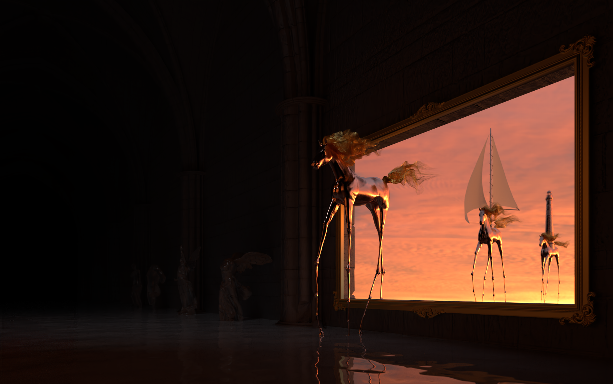

Benoît Ruiz
Computer Graphics enthusiast.
Young developer, I'm passionate about computer graphics and low-level programming.
I'm proficient in C, C++ and Java but also in more modern languages like Python, or more specific languages like CUDA. My interests are mostly CG, and compiler implementation, but I also have some skills in web and app developpement.
Nori
A path tracer implemented during the EPFL CS-440 course. I won the final rendering competition with this image. The current renderer features things such as various texture types, a curve primitive (for hair rendering), image based lighting, bump mapping, a few simple materials and Optix 7 support.
(since the course is taught every year, I unfortunately can't show the code here)
Tekari

A BSDF-data visualization and editing tool. It was mostly build to visualize materials captured and stored using the technique described in this paper. A web version of the viewer, along with many materials can be seen here
Mitsuba 2
I worked on Mitsuba 2, a retargetable forward and inverse renderer, for about a year, implementing various things such as Optix 7 support (for GPU rendering), or a particle tracer, for efficient caustics rendering.
Julia

An easy to use and fast fractal editor that runs on the gpu. It allows the user to navigate through the julia set, zoom to a part that looks interesting, modify the color gradient used to render the fractal, and capture a screenshot for later use.
Tiny World

A fun and intuitive planet editor. This is just a toy project, and still a work in progress.